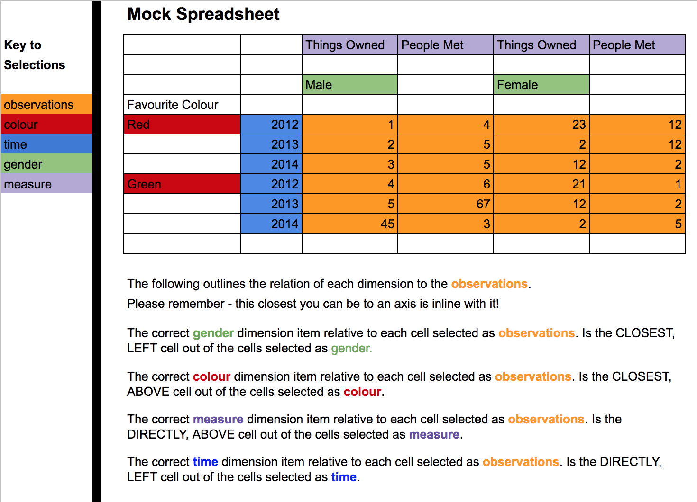

Extraction¶
Relative References¶
The extraction process is all about relative referencing, in all cases we are specifying the direction of cells that make up a dimension RELATIVE TO THE OBSERVATIONS.
Databaker uses the four cardinal directions UP, DOWN, LEFT and RIGHT as well as the terms CLOSEST and DIRECTLY.
Leaving aside the another syntax, the following image highlights how we using these 6 terms for communicating direction.
This is the most abstract part of the databaker process. Don’t worry about understanding it straight away. It’ll make plenty of sense after a few extractions.
Syntax¶
The principle syntax for creating a dimension is (using time as an example):
HDim(measure, “Measure”, DIRECTLY, ABOVE)
where: * measure - is the variable holding the cells * “Measure” - is the label we’re giving the dimension for when its written to CSV.
If you want to assign a single constant value to a dimension you can do so as follows:
HDimConst(“Measure”, “Value”)
The above example tells databaker to include column(s) for a “Measure” dimension, where the value is always “Value”.
Lists¶
Before processing dimension needs to be within a python list. An example is shown below:
NOTE - we’re no longer using the above example. This is just a snipper from an existing recipe.
This formatting is purely a convention though a useful one. If you wanted to gradually append HDim’s to a list then there’s nothing stopping you.
Specific Column Selectors¶
So far we’ve only touched on topic or optional dimensions but many output formats may require specific dimensions be extracted to specific columns (for example the default output structure has a geography column).
When you specify an output format you can also specify CONSTANTS to allow the piping of dimensional data into static always-existing columns.
Lets’ look at the two following examples.
HDim(measure, “Measure”, DIRECTLY, ABOVE)
HDim(measure, MEASURE, DIRECTLY, ABOVE)
In example 1, we are outputting the contents of the measure dimension to a new topic dimension (so we’re adding a new dimension called “Measure” to our csv output).
In example 2, we are outputting the contents of the measure dimension to a SPECIFIC STATIC COLUMN in our output format.
With the current (14/2/2018) databaker output structure, you can use the constants:
- OBS
- DATMARKER
- TIME
- STATUNIT
- MEASURETYPE
- UNITMULTIPLIER
- UNITOFMEASURE
- GEOG
- TIME
- TIMEUNIT
- STATPOP.
A lot of those are related to specific ONS requirements at the time. The two you will use for most transformations however are GEOG and TIME.
For any pythonistas, the script within databaker that defines CSV output structure can be found here: https://github.com/sensiblecodeio/databaker/blob/master/databaker/structure_csv_default.py